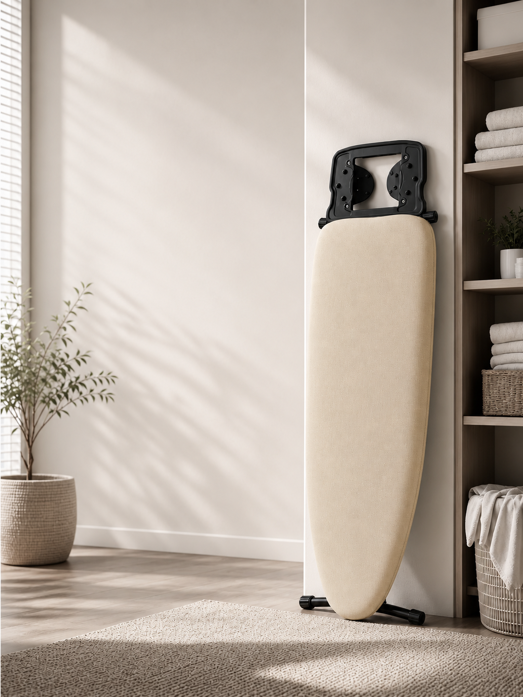
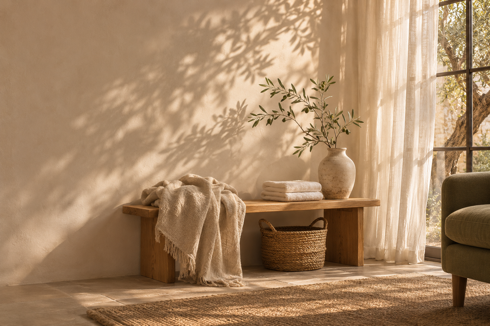
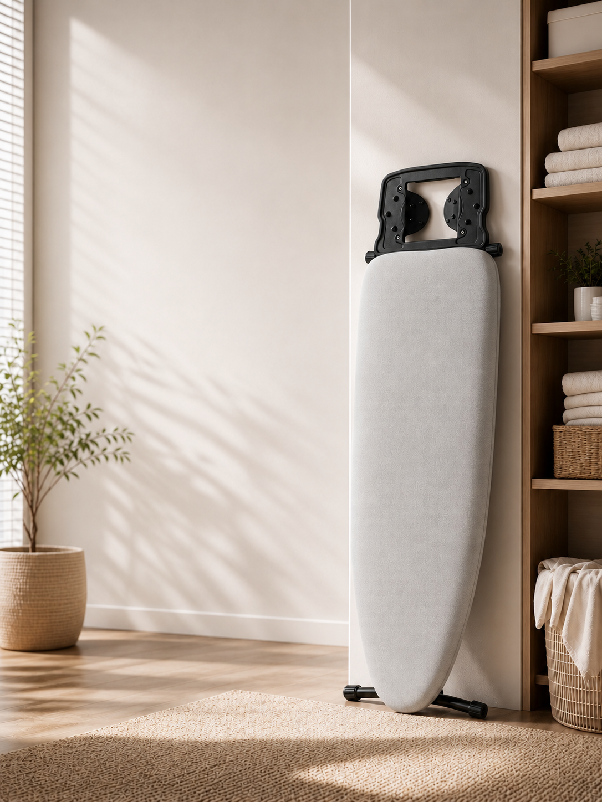
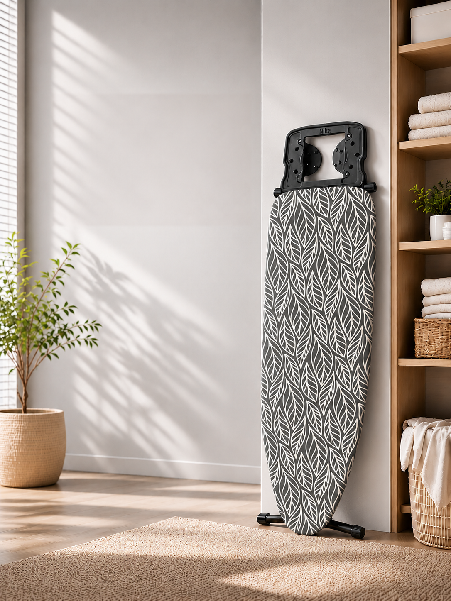
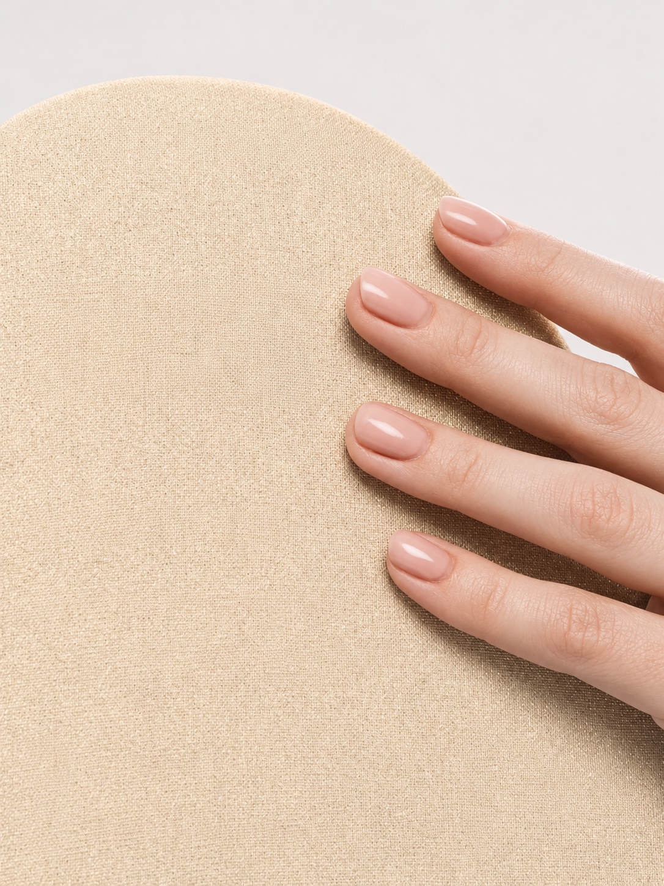

ТЁПЛЫЙ БЕЖЕВЫЙЦвет: Тёплый бежевый
Тепло в деталях
Чехол для гладильной доски · бежевый
Для досок от 110 × 30 до 122 × 40 см.

01 — НАШ МИР
Из любимой рубашки. Из свежего белья.
Из привычных дел, которые становятся приятнее.
Мы — MessLess. Бренд вещей для дома, в котором хочется жить. Нам близки спокойные цвета, понятные решения и забота, которую чувствуешь каждый день.
02 — ПЕРВАЯ КОЛЛЕКЦИЯ
Начинаем с простого —
с заботы о любимых вещах.
Чехлы для гладильных досок MessLess.

ТЁПЛЫЙ БЕЖЕВЫЙЦвет: Тёплый бежевый
Чехол для гладильной доски · бежевый
Для досок от 110 × 30 до 122 × 40 см.

СПОКОЙНЫЙ СЕРЫЙЧехол для гладильной доски · серый
Для досок от 110 × 30 до 122 × 40 см.

ЛИСТЬЯ · СКОРОВертикальные листья · 130 × 47 см
Рисунок меняется вместе с размером.
На фотографиях чехлы надеты на доски. Доска в комплект не входит.
Актуальные цена, наличие и условия доставки — в карточке на Wildberries.

Тефлон · хлопок
Поролон · войлок
ПРОДУМАНО ДО КАЖДОГО СЛОЯ
Тефлоновое покрытие облегчает скольжение утюга. Шнур-утяжка и липучки плотно фиксируют чехол — можно сосредоточиться на любимых вещах.
240г/м²
Держит форму и добавляет прочность.
320г/м²
Вместе с поролоном смягчает неровности доски.
Сетка для глажки и карандаш для чистки утюга.
03 — ЗАБОТА О ВЕЩАХ
Несколько простых ответов,
чтобы вам было спокойнее.
Измерьте длину и максимальную ширину рабочей поверхности доски.
Оба размера доски должны входить в диапазон. Размер чехла больше поверхности доски: запас нужен для натяжения за края. При необычной форме носика уточните посадку у продавца.
Расположите чехол по центру доски, расправьте поверхность, затяните шнурок и закрепите липучки. Разместите крепления так, чтобы они не мешали механизму складывания.
Выбирайте минимальную температуру и деликатный режим. Отключите отжим или установите минимальный. Сушите без сильного провисания, вдали от батареи. Перед стиркой сверьтесь с инструкцией к вашему чехлу.
После хранения материалу нужно немного времени. Обычно заломы расправляются за 2–3 глажки. Если складки сохраняются или есть повреждения, напишите нам в чат с продавцом на Wildberries и приложите фото.
Выберите цвет и размер в коллекции — кнопка откроет соответствующую карточку Wildberries. Чехлы с листьями пока готовятся к продаже. Там можно узнать цену и сроки доставки, оформить заказ и обратиться к продавцу.
MESSLESS — МИР ПОРЯДКА
Для привычных дел и любимого дома.